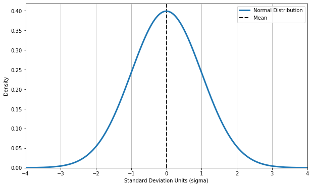
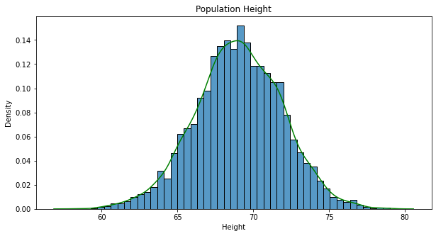
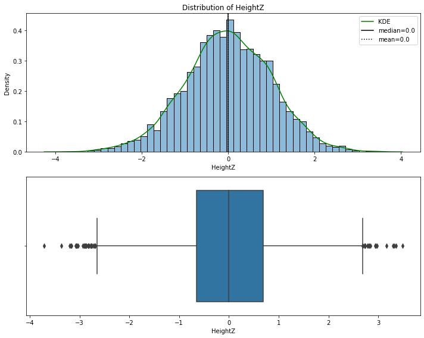
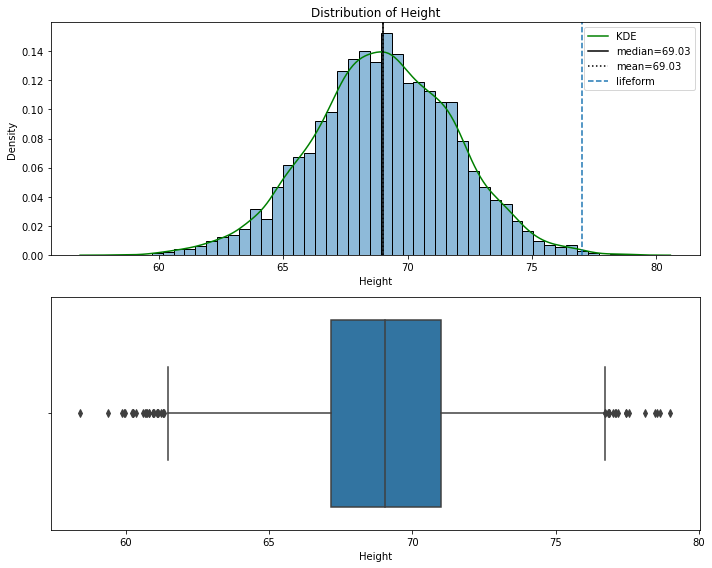
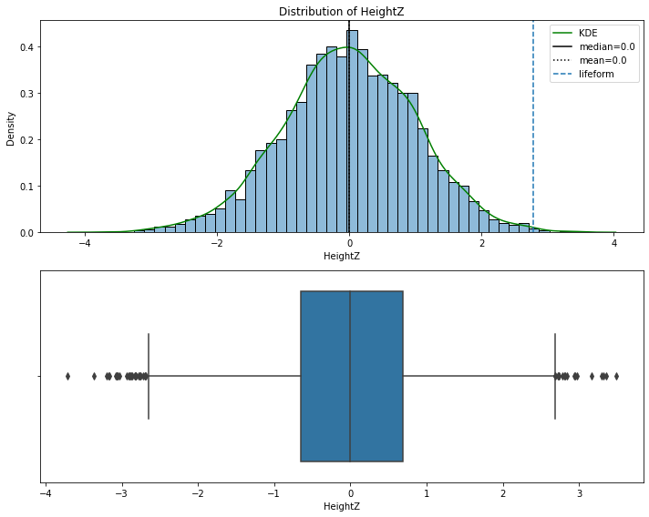
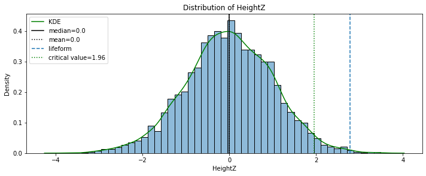
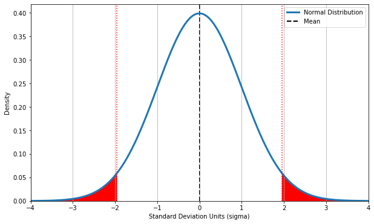
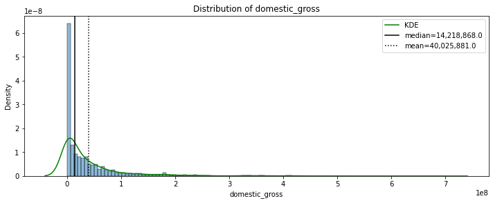
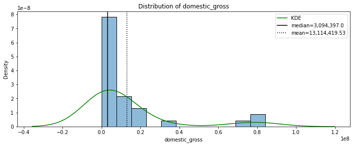
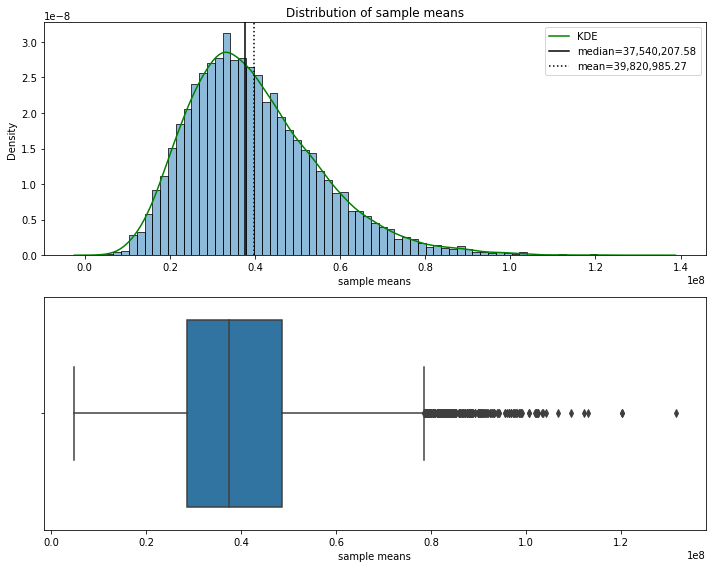

Topic 13: Central Limit Theorem#
onl01-dtsc-ft-022221
03/26/21
Topics#
Review: Normal distribution/Standard Normal Distribution
Z-tests with Normal Distribution
Sampling
Central Limit Theorem
Confidence Intervals
Resources for Hypothesis Testing#
Questions#
Announcements/The Long-View#
I know a lot of folks are behind and stressed about the large amount of new content, so here is the long-view for this Phase.
Topics Essential for Phase 2 Project
Topic 12, 18, 19, Appendix: Multiple Regression Project
Topics to Review Before Job Interviews:
Topics 11,12,16,17
Topics Related to Hypothesis Testing:
Topic 13,14,15,16
Review: Normal Distribution#
# !pip install -U fsds
from fsds.imports import *
import scipy.stats as stats
plt.rcParams['figure.figsize'] = (10,5)
fsds v0.3.2 loaded. Read the docs: https://fs-ds.readthedocs.io/en/latest/
| Handle | Package | Description |
|---|---|---|
| dp | IPython.display | Display modules with helpful display and clearing commands. |
| fs | fsds | Custom data science bootcamp student package |
| mpl | matplotlib | Matplotlib's base OOP module with formatting artists |
| plt | matplotlib.pyplot | Matplotlib's matlab-like plotting module |
| np | numpy | scientific computing with Python |
| pd | pandas | High performance data structures and tools |
| sns | seaborn | High-level data visualization library based on matplotlib |
The Normal Distribution is symmetrical and its mean, median and mode are equal.
area under curve is equal to 1.0
denser in the center and less dense in the tails
defined by two parameters, the mean (\(\mu\)) and the standard deviation (\(\sigma\)).
The Standardized Normal Distribution is a special case of the Normal Distribution where the mean is 0 and the std is 1.

Special case of the normal distribution where \(\mu=0\) and \(\sigma=1\)
x = np.arange(-4,4,.01)
y = stats.norm.pdf(x)
def plot_normal(x=None,y=None,mean=0,std=1,label='Normal Distribution'):
"""Plots x,y (normal distrubtion)"""
## Generate Distribution if x and y not provided
if x is None:
x = np.arange(-4,4,.01)
if y is None:
y = stats.norm.pdf(x,loc=mean,scale=std)
## Plot the distribution
fig,ax = plt.subplots(figsize=(10,6))
ax.plot(x,y,lw=3,label=label)
## Plot the mean and std grid
ax.axvline(mean,color='k',label='Mean',lw=2,ls='--',zorder=0)
ax.grid(which='major',axis='x')
## Add labels
ax.set(xlabel='Standard Deviation Units (sigma)',
ylabel='Density',
ylim=0,
xlim=(round(min(x)),round(max(x))))
ax.legend()
return fig,ax
plot_normal();

## Loading Heihgt Weight Dataset
dfh = fs.datasets.load_height_weight()
dfh = dfh.groupby('Gender').get_group('Male')
dfh
| Gender | Height | Weight | |
|---|---|---|---|
| 0 | Male | 73.847017 | 241.893563 |
| 1 | Male | 68.781904 | 162.310473 |
| 2 | Male | 74.110105 | 212.740856 |
| 3 | Male | 71.730978 | 220.042470 |
| 4 | Male | 69.881796 | 206.349801 |
| ... | ... | ... | ... |
| 4995 | Male | 68.860062 | 177.131052 |
| 4996 | Male | 68.973423 | 159.285228 |
| 4997 | Male | 67.013795 | 199.195400 |
| 4998 | Male | 71.557718 | 185.905909 |
| 4999 | Male | 70.351880 | 198.903012 |
5000 rows × 3 columns
Standardized Normal Distribution#
Z-Scores#
The standard score (more commonly referred to as a \(z\)-score) is a very useful statistic because it allows us to:
Calculate the probability of a certain score occurring within a given normal distribution and
Compare two scores that are from different normal distributions.
Any normal distribution can be converted to a standard normal distribution and vice versa using this equation:
where \(x\) is an individual data point
\(\mu\) is the mean
\(\sigma\) is the standard deviation
## Normal Population
ax = sns.histplot(dfh['Height'],stat='density')
sns.kdeplot(dfh["Height"],color='green')
ax.set(ylabel='Density',title='Population Height')
stats.normaltest(dfh['Height'])
# dfh[['Height']].hist(bi'ns='auto',figsize=(8,5))
NormaltestResult(statistic=4.278504989483647, pvalue=0.11774282351443165)

## Calculate z-score
from sklearn.preprocessing import StandardScaler
scaler = StandardScaler()
# dfh['HeightZ'] = (dfh["Height"] - dfh['Height'].mean())/ dfh['Height'].std()
# dfh['HeightZ'] = stats.zscore(dfh["Height"])
dfh[['HeightZ']] = scaler.fit_transform(dfh[['Height']])
dfh.describe().round(2)
| Height | Weight | HeightZ | |
|---|---|---|---|
| count | 5000.00 | 5000.00 | 5000.00 |
| mean | 69.03 | 187.02 | 0.00 |
| std | 2.86 | 19.78 | 1.00 |
| min | 58.41 | 112.90 | -3.71 |
| 25% | 67.17 | 173.89 | -0.65 |
| 50% | 69.03 | 187.03 | 0.00 |
| 75% | 70.99 | 200.36 | 0.69 |
| max | 79.00 | 269.99 | 3.48 |
## Our Function From Yesterday(modified)
def plot_distribution(dfh, col='HeightZ', verbose=True,boxplot=True):
df = dfh.copy()
## Calc mean and mean skew and curtosis
median = df[col].median().round(2)
mean = df[col].mean().round(2)
skew_val = round(stats.skew(df[col], bias=False),2)
kurt_val = round(stats.kurtosis(df[col],bias=False),2)
## Plot distribution
fig, ax = plt.subplots(nrows=2,figsize=(10,8))
sns.histplot(df[col],alpha=0.5,stat='density',ax=ax[0])
sns.kdeplot(df[col],color='green',label='KDE',ax=ax[0])
ax[0].set(ylabel='Density',title=col.title())
ax[0].set_title(F"Distribution of {col}")
ax[0].axvline(median,label=f'median={median:,}',color='black')
ax[0].axvline(mean,label=f'mean={mean:,}',color='black',ls=':')
ax[0].legend()
## Plot Boxplot
sns.boxplot(data=df ,x=col,ax=ax[1])
## Tweak Layout & Display
fig.tight_layout()
## Delete boxplot if unwanted
if boxplot == False:
fig.delaxes(ax[1])
if verbose:
plt.show()
print('[i] Distribution Stats:')
print(f"\tSkew = {skew_val}")
print(f"\tKurtosis = {kurt_val}")
## Test for normality
result = stats.normaltest(df[col])
print('\n',result)
if result[1]<.05:
print('\t- p<.05: The distribution is NOT normally distributed.')
elif result[1] >=.05:
print('\t- p>=.05: The distribution IS normally distributed')
return fig, ax
plot_distribution(dfh,col='HeightZ');

[i] Distribution Stats:
Skew = -0.06
Kurtosis = 0.08
NormaltestResult(statistic=4.278504989484121, pvalue=0.11774282351440372)
- p>=.05: The distribution IS normally distributed
# def distplot(df,col='HeightZ'):
# dfh = df.copy()
# ax = sns.histplot(dfh[col],alpha=0.5,stat='density')
# sns.kdeplot(dfh[col],color='green',label='KDE')
# ax.set(ylabel='Density',title=col.title())
# plt.show()
# stats.normaltest(dfh['HeightZ'])
# distplot(dfh)
# dfh[['Height','HeightZ']].hist(figsize=(12,5),bins='auto')
Once data is standardized, can start answering questions about population membership using \(Z\)-Tests
Statistical Testing with Z-scores and p-values#
Population vs Sample#

A population is the collection of all the items of interest in a study. The numbers you obtain when using a population are called parameters.
A sample is a subset of the population. The numbers you obtain when working with a sample are called statistics.
What Are Hypotheses ?#
Null Hypothesis: \(H_0\) there is no relationship / the samples come from the same population.
Alternative: \(H_A\)/\(H_1\) there is a relationship / the samples DO NOT come from same distribution
One-Sample \(z\)-test#
The one-sample \(z\)-test is used only for tests related to the sample mean.

\(\large \alpha\)= 0.05#
What does it mean?
cutoff for judging whether our sample is “significantly” different than the population.
Set |
\(H_0 \) |
\(H_a\) |
Tails |
|---|---|---|---|
1 |
\(\mu= M \) |
\(\mu \neq M \) |
2 |
2 |
\(\mu \geq M \) |
\(\mu < M \) |
1 |
3 |
\(\mu \leq M \) |
\(\mu > M \) |
1 |
Example Z-Test#
We have the height of an unknown lifeform, does it come from the Human male population?
State our Hypothesis and Null Hypothesis#
\(H_0\) = The lifeform’s height comes from the human population.
\(H_1\) = The lifesform’s height is significantly different than humans. (its from another population).
potential_alien_lifeform = 77 #height
## Plot distrubtion, add axvline with lifeform's height
fig,ax = plot_distribution(dfh,col="Height",verbose=False)
ax[0].axvline(potential_alien_lifeform,ls="--",label='lifeform')
ax[0].legend()
<matplotlib.legend.Legend at 0x7fc8d682e5b0>

## Use standardized normal distribution for Z-test
z_alien = scaler.transform([[potential_alien_lifeform]]).flatten()
z_alien
array([2.78499573])
## Plot Z-Scored Height and z_alien
fig,ax = plot_distribution(dfh,col="HeightZ",verbose=False)
ax[0].axvline(z_alien,ls="--",label='lifeform')
ax[0].legend()
<matplotlib.legend.Legend at 0x7fc8d6acbd90>

## Get the critical value for z-test for a one-tailed test with alpha=0.05 (so really 0.025)
critical_value = stats.norm.ppf(.975)
critical_value
1.959963984540054
## Replot HeightZ, alienz and add critical value
fig,ax = plot_distribution(dfh,col="HeightZ",verbose=False,boxplot=False)
ax[0].axvline(z_alien,ls="--",label='lifeform')
ax[0].axvline(critical_value,color='green',ls=':',
label=f'critical value={round(critical_value,2)}')
ax[0].legend()
<matplotlib.legend.Legend at 0x7fc8d6a6a070>

## calculate the p-value of observing a human with this height
p = 1 - stats.norm.cdf(z_alien)
p
array([0.00267642])
Confidence Intervals#
critical_value
1.959963984540054
stats.norm.interval(.95)
(-1.959963984540054, 1.959963984540054)
## Get normal dist figure
fig,ax =plot_normal(x,y)
## Critical Values (from z-table lookup)
crit_z_hi = critical_value#1.96
crit_z_low= -crit_z_hi
## Plot critical values
crit_kws = dict(c='red',ls=':')
ax.axvline(crit_z_hi,**crit_kws)
ax.axvline(crit_z_low,**crit_kws)
# Fill tails
ax.fill_between(x,y,where=(x>crit_z_hi)|(x<crit_z_low),color='red')#&(y)
<matplotlib.collections.PolyCollection at 0x7fc8d716f940>

Central Limit Theorem#
“The central limit theorem states that, under many conditions, independent random variables summed together will converge to a normal distribution as the number of variables increases.”
This becomes very useful for applying statistical logic to sample statistics in order to estimate population parameters.
The means of samples from the population will form a normal distribution, no matter what how a population’s distribution is shaped!
pop = pd.read_csv('../topic_12_statistical_distributions/joined_movie_data_for_sg.csv')
pop = pop[['domestic_gross']]
## Saving the Population Domestic Gross
plot_distribution(pop,col='domestic_gross',boxplot=False);

[i] Distribution Stats:
Skew = 3.74
Kurtosis = 19.96
NormaltestResult(statistic=2781.049459203991, pvalue=0.0)
- p<.05: The distribution is NOT normally distributed.
SAMPLE = pop.sample(n=30, random_state=6)
plot_distribution(SAMPLE,col='domestic_gross',boxplot=False);

[i] Distribution Stats:
Skew = 2.37
Kurtosis = 4.73
NormaltestResult(statistic=27.017795177952017, pvalue=1.3588149627585664e-06)
- p<.05: The distribution is NOT normally distributed.
Demonstrating How Taking Many Samples Creates a Normal Distribution of Means (like in CLT Lab)#
sample_size = 20
N_SAMPLES = 10000
## RESAMPLE AND PLOT MEANS
## Empty lists for samples and means
samples = []
sample_means = []
## Get Samples & Means
for i in range(N_SAMPLES):
sample = pop.sample(sample_size)
samples.append(sample)
sample_means.append(sample.mean().values[0])
%%time
sample_mean_df = pd.DataFrame({'sample #':range(N_SAMPLES),
'sample means':sample_means})
sample_mean_df
CPU times: user 3.34 ms, sys: 1.13 ms, total: 4.47 ms
Wall time: 3.99 ms
| sample # | sample means | |
|---|---|---|
| 0 | 0 | 43926491.90 |
| 1 | 1 | 28940392.30 |
| 2 | 2 | 25966948.10 |
| 3 | 3 | 22214279.25 |
| 4 | 4 | 36947023.00 |
| ... | ... | ... |
| 9995 | 9995 | 35886879.75 |
| 9996 | 9996 | 19421888.60 |
| 9997 | 9997 | 27451020.40 |
| 9998 | 9998 | 48621761.90 |
| 9999 | 9999 | 14618869.50 |
10000 rows × 2 columns
# sample_means
plot_distribution(sample_mean_df,col='sample means');

[i] Distribution Stats:
Skew = 0.86
Kurtosis = 1.08
NormaltestResult(statistic=1163.5554896820786, pvalue=2.1733802760663787e-253)
- p<.05: The distribution is NOT normally distributed.
The T-Distribution & T-Tests#
We usually won’t know the population data, so we can modify the statistical distribution to account for this.
## The T-Distribution
x = np.arange(-3,3,.01)
y = stats.norm.pdf(x,loc=0,scale=1)
## Plot the Normal Distrubtion
fig,ax = plot_normal(x,y)#plt.subplots(figsize=(8,4),nrows=1)
# ax.plot(x,y,zorder=-1,lw=3,label='Normal Distribution')
## Adding T-Distribution
for degrees_freedom in [0,1,2,3,50,100,1000]:#,5]:#,10,1000]:
# degrees_freedom=5
y_T = stats.t.pdf(x,df=degrees_freedom)
ax.plot(x,y_T,zorder=-1,ls='--',lw=1,label=f'T Distribution (df={degrees_freedom})')
ax.legend()
## Confidence Interval
ci_low,ci_high = stats.t.interval(alpha = 0.95, # Confidence level
df= len(x)-1, # Degrees of freedom
loc = 0, # Sample mean
scale = 1) # Standard deviation estimate
ax.axvline(ci_low)
ax.axvline(ci_high)
fig
## The T-Distribution & T-Tests
## The T-Distribution
x = np.arange(-3,3,.01)
y = stats.norm.pdf(x,loc=0,scale=1)
## Plot the Normal Distrubtion
fig,ax = plot_normal(x,y)#plt.subplots(figsize=(8,4),nrows=1)
# ax.plot(x,y,zorder=-1,lw=3,label='Normal Distribution')
## Adding T-Distribution
for degrees_freedom in [1,2,3,1000]:#,5]:#,10,1000]:
# degrees_freedom=5
y_T = stats.t.pdf(x,df=degrees_freedom)
ax.plot(x,y_T,zorder=-1,ls='--',lw=1,label=f'T Distribution (df={degrees_freedom})')
ax.legend()
## Confidence Interval
ci_low,ci_high = stats.t.interval(alpha = 0.95, # Confidence level
df= len(x)-1, # Degrees of freedom
loc = 0, # Sample mean
scale = 1) # Standard deviation estimate
ax.axvline(ci_low)
ax.axvline(ci_high)
fig
population.std()